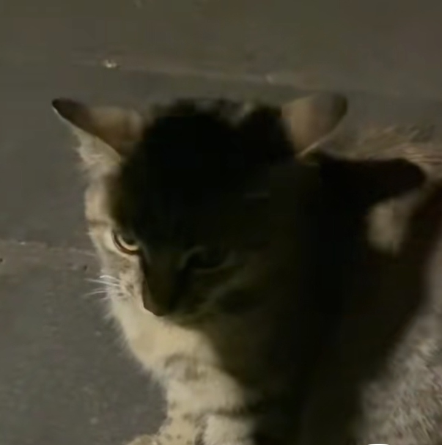

笑不活了，正正叫完第一声，一直用手捂着他爸的嘴[捂脸][捂脸][捂脸]
三代人晚饭后在一个大床上，这么聊天吃水果。真幸福。想起了小时候
这哥哥性格真好，也是个好儿子，从来没对妹妹和家人发过火，每次都呵呵笑，性格真好，心胸宽广[比心][比心][比心]
这小姑子是全网最幸福的了，不但没有姑嫂矛盾，嫂子还那么疼她！！[比心][比心]
爷爷上一秒还哈哈大笑，下一秒儿子说知道了哥，爷爷立马不笑了，把我笑死了[捂脸][捂脸]@
敢做不敢当，里面有这句歌词吗[听歌]
原词是始终敢当不敢做啊
它太像智障了[捂脸][捂脸]
咪：人居然揪住我的胳肢窝[紫薇别走]
还得学[干饭人]
一直找不到东西下嘴[笑哭]

哈哈哈好可爱啊，像个大傻子
这表情咋看着就像大憨包呢[尬笑]
这是什么狗狗啊，好漂亮
谁懂这个小表情啊 可爱死了[如花][如花][如花]
？
？撒盐呢[憨笑]
感觉这种人在猫咖外边也能玩一天。。[憨笑]
小猫看起来很凶 但其实只是角度问题
猫：？你最好有事[憨笑]
加一[黑脸]
最窝囊的撸猫法 让你给研究出来了[憨笑]
猫:你有病吧[黑脸]
猫：划拉啥呢 
🐱：想报j可是他不留下作案指纹[真的会谢]
你再张牙舞爪的哈哈哈哈哈哈它马上都要开启棘背龙模式了
郭晶晶退役时，外国人觉得轻舟已过万重山，陈若琳的出现，外国人觉得乌蒙山连着山外山，全红婵的出现，外国人觉得这里的山路十八弯[赞][赞][赞][赞]
“郭”有千秋，“陈”功上岸，“全”力以赴， “晶”现世界，“若”有不同，“红”旗飘飘， “晶”动奥运，“琳”淋尽致，“婵”联冠军， 尽显巾帼英雄！[赞][赞][赞][撒花][撒花][撒花][比心][比心][比心]
一代接一代的跳水女皇 （陈）功上岸，（全）力以赴 （若）有所思，（红）旗升起 （琳）危不惧，（婵）联冠军 陈若琳师傅一笑倾城 全红婵徒弟一跳封神 徒弟是入水没水花 师傅是笑得美如花 中国🇨🇳无限的骄傲[赞][赞][赞]
[微笑]谁老公[再见]
主播好硬气啊[憨笑][憨笑][憨笑]
坐在树下的牛顿，变成了午顿
作者老公，拒绝反弹[调皮][调皮][调皮]
你老公！！！
我比较真儿[干饭人]快说到底是谁老公？

真是一代有一代的动物世界
身为汉使，要有汉使的觉悟[微笑][微笑]
穿这身去[呲牙][呲牙][呲牙]
下次穿这个[不失礼貌的微笑]
安史之乱失败安禄山流亡日本真实影像[看][看][看][捂脸][捂脸][捂脸]
陛下，安禄山私通番属，图谋不轨啊
她有惹人讨厌的地方与她很厉害并不冲突，我希望有更多很厉害的女性出现[小鼓掌]
做了更方便传播的版本，大家要记得支持原创啊，姐姐说的真的很棒[玫瑰][玫瑰][玫瑰][玫瑰]
她今年承诺招新五千名员工，在这种就业形势紧张的局面下真的特别有意义[眼含热泪]
网上说的再多，我家空调还是买格力[鼓掌]
不要去参与任何一场围剿女性的活动[抱抱你]
我不会诋毁任何一个女企业家，她们拓开了女性从商道路的每一步[憨笑]
是的，她的有些言论我也不喜欢，但是没必要把她贬得一无是处，实际上大家对女性领导者的包容度还是太低了
这题我懂，你去问珠海人就知道了，只要你是退休的珠海人，去格力餐厅吃饭免费
她现在被扒出来的反感言行甚至在大多数男老板身上都能看到，她一个女老板一步步爬上来已经很不容易了，可是那些在男老板身上被忽视的点却被大众拿出来反复鞭笞，不是很懂，大家为什么不善意玩梗呢，她未必不会听劝啊，怎么男的玩个梗的事到女的这里就开始恶意辱骂
对啊，终于有人说了，网上各种断章取义说格力怎么怎么，有没有想过如果一家企业倒了要造成多少影响，多少人将没有经济来源，真是一群看热闹不嫌事大的，百花齐放才是真道理，一支独秀只会造成资源垄断，没有竞争，哪来的产品更新[微笑][微笑][微笑]，真无语，而且格里这样的企业确实是很良心了，真不知道现在人的思想，被舆论牵着走[微笑]
我接受女性不完美，有些男的出轨家暴但是稍微有点能力就能被原谅，女人也有不完美的权利
决策力高的人必然善于表达愤怒 这也对应博主说的 如果她不具备这些强硬的特质也许无法做到现在的成绩
女性要比男性付出更多，做出更多的成就，才能得到普通男性一样的夸赞
估计是他自己养的，估计打湿放外面拍流量。正常野外的猫根本近身不了，还抓它崽，咬不死他
最后的结果是把大猫和小奶猫都带回去了。[感谢][感谢][感谢]
小时候总以为一群孩子主演的电影不会有人真的死去。
这片啥都好，就是不开灯[憨笑][憨笑]亮度拉满都能当镜子照[憨笑]
这个系列终于有哈利波特版本了[憨笑]
每次必哭[流泪]
说出让你们在哈利波特中最意难平的角色。[赞]
滋滋滋个没完了，不是叫你换一个吗[憨笑]
你所谓的“碍事的”，却是我最爱的人

@小雯皇帝 一个视频概括了八部哈利波特，概括不了我的童年
以前我也以为是练的，后来有个光头露娜直播，我就知道，这玩意绝对天生的。
Read more: